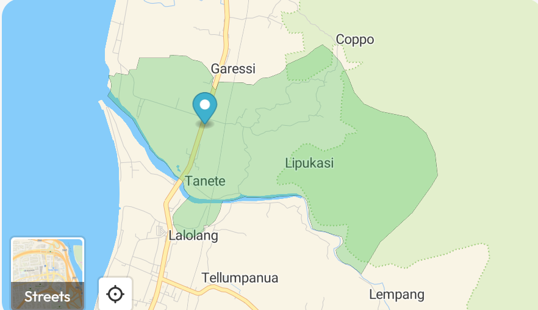

Selamat Datang di Desa Lipukasi

Sejarah Desa
Menurut sejarahnya, "Lipu" yaitu Wanua (Dusun) dan "Kasi" yaitu Berkasih-kasihan (Rukun), artinya Desa Lipukasi adalah desa yang senantiasa diliputi kasih sayang oleh warga-warganya.
Kini, Desa Lipukasi dipimpin oleh Kepala Desa Awaluddin, SE, MM yang berkomitmen untuk mewujudkan desa yang maju, mandiri, dan religius.

Kegiatan Terkini
Desa Lipukasi aktif menyelenggarakan berbagai kegiatan untuk meningkatkan kesejahteraan masyarakat dan pembangunan desa.
Beberapa kegiatan rutin meliputi gotong royong, pelatihan UMKM, dan penyuluhan kesehatan.

Peta Lokasi
Desa Lipukasi terletak di Kecamatan Tanete Rilau, Kabupaten Barru, Sulawesi Selatan.
Berjarak 6 km dari ibukota Kabupaten Barru dan 4 km dari ibukota kecamatan Tanete Rilau.


![Penduduk]()